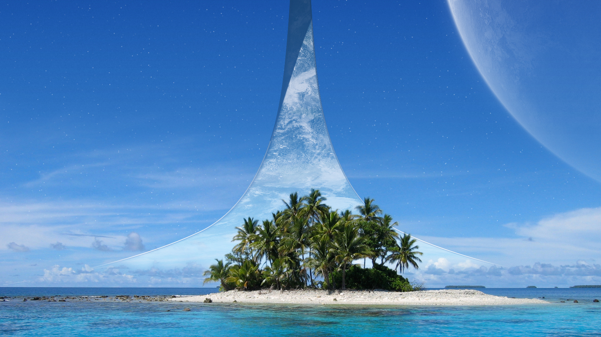

I Gave Halo a Try Seventeen Years After It Released
In the name of Allah, the Most Gracious, the most Merciful.
My Story of Experiencing Halo for the First Time
I’ve been playing video games since the mid 90s, but, for over 20 years, I have hated first person shooters, could not aim at a target if my life depended on it, and did not finish a single first person shooter campaign. But Halo: Combat Evolved changed all of that. This is chapter two of that story.
Chapters
This story is broken into four chapters. Use the links below to jump to any single part of the storey.

Chapter 2
It was on the March of 2018; out of curiosity, I decided to give Halo: Combat Evolved a try on my PC. I wasn’t intending to play through it…just see what it’s all about. And then something interesting happened. I saw the Main Menu pop up, and immediately, I was drawn into this ring shaped world…the “Halo” ring, as I’d later learn. A world shaped like a ring…lots of thoughts went through my head, from whether such a world is physically possible in space…and I thought of Allah, of all things.
You see, in main menu, you can see that this ring world is orbiting what looked to be a gas giant, like Jupiter and Saturn are. No life as we no it could live on gas giants. Yet, I could see this ring, with such earth-like environment orbiting this lifeless planets. To completely different worlds side by side. It created a kind of contrast that took me back to earth. It reminded me how earth is this small almost lonely planet in the vast ocean of what appears to be a vast ocean of a lifeless universe. Earth, with its green trees and blue ocean looks beautifully different from its neighbors, all of which have one or more reasons why it cannot harbor life like our blue marble can. It reminded me how perfectly balanced everything had to be for our little world to be this way. For us to be able to roam its surface, eating its fruits and swimming its oceans. It reminded me, once again, that these are just a few of the counless blessings of Allah (SWT), blessings which we all take for granted and none of us can truly comprehend.
It was these kinds of wondering thoughts that made me sit and stare at this ring-world rotating in the background of Halo’s menu screen.
After playing through the first mission, I landed on the second mission, watching Master Chief land on this ring from the main menu. I was taken aback. I could tell by seeing menu that Halo’s story would probably involve being on the surface of the ring-world, but actually seeing myself walking off the life-pod as Master Chief and, then, walking on the surface of this strange world surprised me as if I never had expected this. I don’t know why I felt this way. At the time, it was a weird thing to process.
Remember, this is was 2018. Halo: Combat Evolved came out in 2001! I was happy I never read about the game’s story. This was all new to me. I walked about the ring’s grassy surface slowly as Master Chief, admiring the waterfall, and then the view…oh my the view. Seeing the whole ring world again but now from the surface. It felt huge. This brought back the stream of thoughts I had earlier on the menu screens. I was once again day-dreaming. Imagining what standing on such world be like. Would it actually look like this? Could you really see the opposite side of the ring?
I was playing a first person shooter was a first person shooter, might I remind you. Even I forgot I was playing a shooter. So many mystery, wonder, curiosity, and awe, all from just standing on this small portion of a map with no dialog, story, or even gameplay. Yet, I felt this small section alone told a more gravitating and rich story than many games do in their entire campaign. I was blown away. I was blown away by a game without even requiring the core gameplay mechanic. I had a reason to play this game even though I didn’t like the shooter game mechanic.
I thought I was going to only play this one or two level. But Halo managed to captivate me. Click here to continue to chapter 3.
External Links
Thanks for visiting!